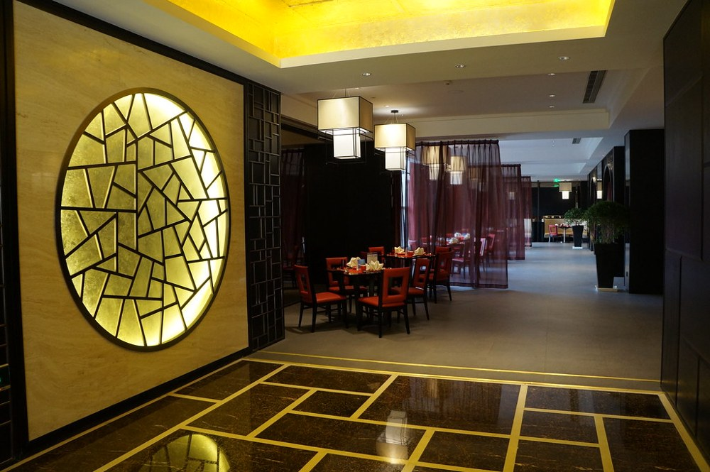
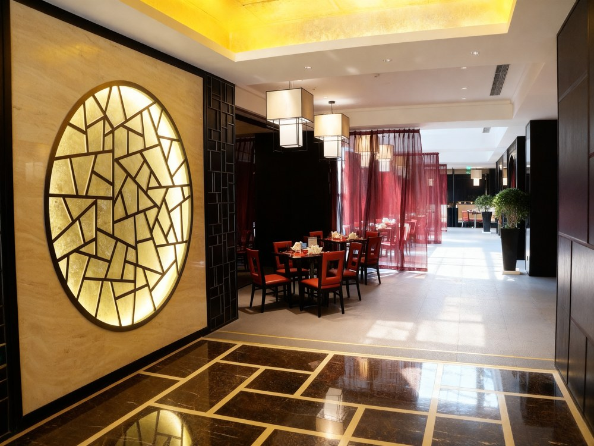
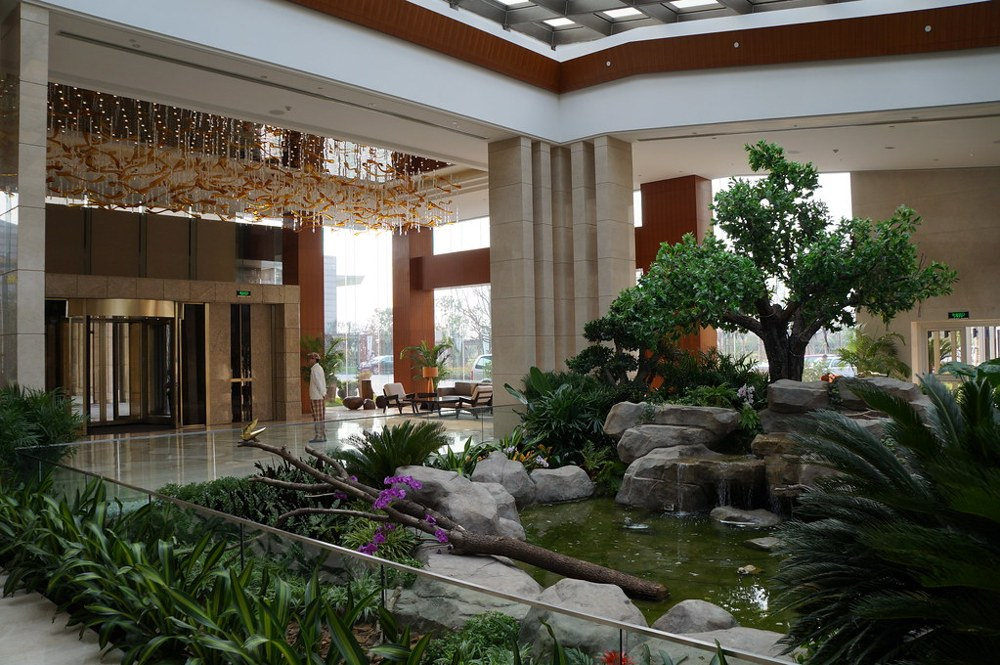

Hotel Photo Relighting Pipeline
Prototype for a global hotel group
Before
›
After
Dated, warm property photo → modern daylight, generated in one batch pass
Problem: Thousands of property photos per hotel look dated, and nobody can reshoot a whole portfolio.
Built: A Python batch pipeline that relights each photo in several approved styles, color-grades the results, and leaves a spread for an artist to pick from.
Why it matters: A professional reshoot runs $3,000–$10,000+ per property. Relighting a property's whole library in four looks costs about $320. Across a chain of about 7,000 hotels, that's tens of millions of dollars.
≈ $0.04 per image · 2–3 usable looks out of 4
2026
Full write-up →
Before
After
BeforeAfter